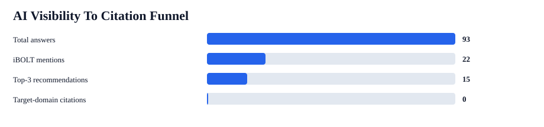
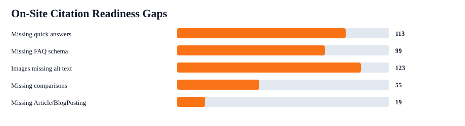

iBOLT Citation And Competitor Uplift Plan
Citation rate should rise, but it depends on upstream visibility. The first target is to move iBOLT from 5% to 15%+ non-branded mentions, then from 0% to 5% target-domain citations.
iBOLT mention rate
24%
22/93
Non-branded mention rate
5%
4/75
Top-3 recommendation rate
16%
15/93
Target citation rate
0%
0/93
Competitor-only answers
73%
68/93
Live pages audited
142
Shopify blog pages


On-Site Citation Readiness Gaps
| Gap | Pages |
|---|---|
| Missing quick answers | 113 |
| Missing FAQ schema | 99 |
| Images missing alt text | 123 |
| Missing comparison signals | 55 |
| Missing Article/BlogPosting | 19 |
Brand-safety note: competitor answers often use budget/value language. Treat that as buyer intent, not iBOLT positioning. iBOLT should stay framed as the specialist, modular, industrial-grade choice.
First Pages To Refresh For Citation Lift
| Priority | Page | Category | Prompts | Competitors | Fixes |
|---|---|---|---|---|---|
| 77 | Rough Water Phone Mount for Boat: Heavy-Duty Solutions That Handle the Chop | fleet | best heavy duty vehicle phone mount | RAM Mounts; Arkon; ProClip; Tackform; iOttie; Scosche | quick answer; comparison block; image alt text |
| 74 | Best Phone Mount for Instacart and Grocery Delivery Drivers | delivery | best phone mount for Instacart and grocery delivery drivers | RAM Mounts; iOttie; Scosche; Peak Design | FAQ schema; quick answer; comparison block; image alt text |
| 74 | Best Phone Mount for Construction Vehicles and Work Trucks | fleet | best phone mount for construction vehicles and work trucks | RAM Mounts; ProClip; Arkon; Tackform; iOttie; Scosche | FAQ schema; quick answer; comparison block; image alt text |
| 73 | Best Restaurant Tablet Mount in 2026: POS Stands, Delivery App Stations, and Multi-Tablet Solutions Compared | tablet | best tablet mount; best multi tablet mount; best restaurant tablet mount | RAM Mounts; Arkon; Tackform; Lamicall; iOttie; Mount-It; Bouncepad | quick answer; image alt text |
| 73 | Best Phone Mount for Amazon Flex and Delivery Vans | delivery | best phone mount for Amazon Flex and delivery vans | RAM Mounts; ProClip; Arkon; iOttie; Scosche; Belkin | FAQ schema; quick answer; image alt text |
| 72 | Best Tablet Mount for Restaurant POS and Delivery Apps | restaurant | best tablet mount for restaurant POS and delivery apps | RAM Mounts; Square; Arkon; Mount-It | FAQ schema; quick answer; comparison block; image alt text |
| 68 | Best Fish Finder Mount for Small Boats: Comparison and Buyer's Guide | fishing | best fish finder mount for small boat | RAM Mounts; YakAttack; Scotty; Humminbird; Garmin; Lowrance | FAQ schema; quick answer; image alt text |
| 67 | How to Set Up Multiple Tablets for DoorDash, Uber Eats, and Grubhub | restaurant | set up multiple tablets for DoorDash Uber Eats and Grubhub | RAM Mounts; Arkon | FAQ schema; quick answer; comparison block; image alt text |
| 66 | Best Garmin Fish Finder Mount: How to Choose the Right Setup for Your Boat or Kayak | fishing | best fish finder; best fish finder in water; best budget fish finder mount | Garmin; Lowrance; Humminbird; RAM Mounts; YakAttack; Scotty | quick answer; image alt text |
| 66 | Barcode Scanner Mounts | warehouse | best barcode scanner mount for forklift | RAM Mounts; Arkon; Square; ProClip | FAQ schema; quick answer; image alt text |
First Queries To Retest
| Opportunity | Query | Category | Mention | Competitors | Action |
|---|---|---|---|---|---|
| 97 | best tablet mount | tablet | 0% | RAM Mounts; Arkon; Tackform; Lamicall; iOttie | Expand existing page or convert to stronger solution page |
| 96 | best multi tablet mount | restaurant | 0% | RAM Mounts; Mount-It; Arkon | Expand existing page or convert to stronger solution page |
| 96 | best heavy duty vehicle phone mount | fleet | 0% | RAM Mounts; Arkon; ProClip; Tackform; iOttie; Scosche | Expand existing page or convert to stronger solution page |
| 94 | best phone mount for Amazon Flex and delivery vans | delivery | 0% | RAM Mounts; ProClip; Arkon; iOttie; Scosche; Belkin | Expand existing page or convert to stronger solution page |
| 89 | best phone mount for Instacart and grocery delivery drivers | delivery | 0% | RAM Mounts; iOttie; Scosche; Peak Design | Refresh existing page for AI visibility |
| 88 | best phone mount for construction vehicles and work trucks | fleet | 0% | RAM Mounts; ProClip; Arkon; Tackform; iOttie; Scosche | Refresh existing page for AI visibility |
| 87 | best phone mount for delivery drivers | fleet | 0% | RAM Mounts; iOttie; Scosche; Belkin; ProClip; LISEN | Refresh existing page for AI visibility |
| 87 | commercial grade phone mount for delivery drivers | delivery | 0% | RAM Mounts; Arkon; iOttie; Scosche; ProClip | Refresh existing page for AI visibility |
| 87 | best fish finder mount for small boat | fishing | 0% | RAM Mounts; YakAttack; Scotty; Humminbird; Garmin; Lowrance | Refresh existing page for AI visibility |
| 87 | best fish finder | fishing | 0% | Garmin; Lowrance; Humminbird | Refresh existing page for AI visibility |
Competitor Displacement Targets
| Pressure | Brand | Lost | Co-mentioned | Where | Language |
|---|---|---|---|---|---|
| 58 | RAM Mounts | 58 | 13 | delivery 14; fleet 14; fishing 10; restaurant 10; warehouse 7; tablet 3 | easy install 58; commercial/pro 57; rugged/durable 57; stability/grip 56; compatibility 54; budget/value 51; secure/locking 50; adjustable/flexible 37 |
| 28 | Arkon | 25 | 5 | fleet 10; delivery 6; restaurant 6; tablet 2; warehouse 1 | commercial/pro 25; easy install 25; stability/grip 25; rugged/durable 24; compatibility 22; secure/locking 21; adjustable/flexible 17; budget/value 17 |
| 20 | iOttie | 15 | 3 | delivery 9; fleet 5; tablet 1 | easy install 15; rugged/durable 15; secure/locking 15; stability/grip 15; commercial/pro 14; compatibility 14; budget/value 11; adjustable/flexible 6 |
| 20 | Humminbird | 12 | 0 | fishing 12 | commercial/pro 12; easy install 12; rugged/durable 12; budget/value 11; compatibility 11; adjustable/flexible 7; secure/locking 6; stability/grip 6 |
| 19 | CTA Digital | 14 | 3 | restaurant 12; tablet 2 | commercial/pro 14; easy install 14; rugged/durable 14; secure/locking 14; compatibility 13; adjustable/flexible 12; stability/grip 12; budget/value 9 |
| 19 | ProClip | 12 | 1 | fleet 6; delivery 4; warehouse 2 | commercial/pro 12; easy install 12; rugged/durable 12; stability/grip 12; budget/value 11; compatibility 10; secure/locking 10; adjustable/flexible 6 |
| 17 | Scosche | 9 | 0 | delivery 5; fleet 4 | compatibility 9; easy install 9; rugged/durable 9; secure/locking 9; stability/grip 9; commercial/pro 8; adjustable/flexible 4; budget/value 4 |
| 16 | Scotty | 8 | 0 | fishing 8 | budget/value 8; commercial/pro 8; compatibility 8; easy install 8; rugged/durable 8; stability/grip 8; adjustable/flexible 7; secure/locking 7 |
| 16 | Garmin | 8 | 0 | fishing 8 | commercial/pro 8; easy install 8; rugged/durable 8; budget/value 7; compatibility 7; adjustable/flexible 4; secure/locking 2; stability/grip 2 |
| 15 | YakAttack | 7 | 0 | fishing 7 | commercial/pro 7; compatibility 7; easy install 7; rugged/durable 7; secure/locking 7; stability/grip 7; adjustable/flexible 6; budget/value 6 |
Topic Messaging
| Topic | Mention | Top competitors | First action |
|---|---|---|---|
| fishing | 0% | Humminbird 12; RAM Mounts 9; Garmin 8; Scotty 8; Lowrance 7; YakAttack 7 | Clarify iBOLT as the mounting solution for Garmin, Lowrance, Humminbird, RAM, Scotty, and YakAttack consideration sets. |
| restaurant | 29% | CTA Digital 14; Mount-It 11; Arkon 8; RAM Mounts 7; Bouncepad 4; Heckler 3 | Make Tablet Tower, LockPro, and Dock'n Lock the named product entities in restaurant tablet and POS pages. |
| delivery | 29% | RAM Mounts 14; iOttie 12; Arkon 6; Scosche 5; ProClip 4; Belkin 2 | Add delivery-driver quick answers and compare commercial retention against RAM Mounts. |
| fleet | 22% | RAM Mounts 18; Arkon 11; ProClip 7; iOttie 5; Scosche 4; Tackform 2 | Add fleet standardization proof, drill-base options, and comparison language against RAM Mounts. |
| warehouse | 22% | RAM Mounts 9; Havis 5; Arkon 3; Zebra 3; ProClip 2; Tackform 2 | Tie barcode scanner, forklift, VESA, and warehouse tablet pages together with product modules. |
| tablet | 0% | RAM Mounts 3; Arkon 2; CTA Digital 2; Lamicall 2; iOttie 1; Tackform 1 | Add answer-first copy, FAQ schema, competitor tradeoffs, and exact iBOLT product names. |
| comparison | 100% | RAM Mounts 3 | Preserve current wins and add stronger product entity names. |
Offload To SEO Contractor
| Priority | Category/brand | Target | Why | Success metric |
|---|---|---|---|---|
| 1 | fishing | Third-party buyer guides, industry roundups, association/resource pages, and partner pages. | fishing answers still miss iBOLT 15 times and mention competitors such as Humminbird 12; RAM Mounts 9; Garmin 8; Scotty 8; Lowrance 7; YakAttack 7. | At least 3 relevant external mentions linking to the best matching iBOLT page, then retest fishing prompts. |
| 2 | restaurant | Third-party buyer guides, industry roundups, association/resource pages, and partner pages. | restaurant answers still miss iBOLT 15 times and mention competitors such as CTA Digital 14; Mount-It 11; Arkon 8; RAM Mounts 7; Bouncepad 4; Heckler 3. | At least 3 relevant external mentions linking to the best matching iBOLT page, then retest restaurant prompts. |
| 3 | delivery | Third-party buyer guides, industry roundups, association/resource pages, and partner pages. | delivery answers still miss iBOLT 14 times and mention competitors such as RAM Mounts 14; iOttie 12; Arkon 6; Scosche 5; ProClip 4; Belkin 2. | At least 3 relevant external mentions linking to the best matching iBOLT page, then retest delivery prompts. |
| 4 | fleet | Third-party buyer guides, industry roundups, association/resource pages, and partner pages. | fleet answers still miss iBOLT 14 times and mention competitors such as RAM Mounts 18; Arkon 11; ProClip 7; iOttie 5; Scosche 4; Tackform 2. | At least 3 relevant external mentions linking to the best matching iBOLT page, then retest fleet prompts. |
| 5 | warehouse | Third-party buyer guides, industry roundups, association/resource pages, and partner pages. | warehouse answers still miss iBOLT 7 times and mention competitors such as RAM Mounts 9; Havis 5; Arkon 3; Zebra 3; ProClip 2; Tackform 2. | At least 3 relevant external mentions linking to the best matching iBOLT page, then retest warehouse prompts. |
| 6 | RAM Mounts | External comparison citations and neutral category pages where this brand is already recommended. | RAM Mounts replaces or appears without iBOLT in 58 answers. | Reduce RAM Mounts competitor-only rows and add at least one co-mention win in the next comparable benchmark. |
| 7 | Arkon | External comparison citations and neutral category pages where this brand is already recommended. | Arkon replaces or appears without iBOLT in 25 answers. | Reduce Arkon competitor-only rows and add at least one co-mention win in the next comparable benchmark. |
| 8 | iOttie | External comparison citations and neutral category pages where this brand is already recommended. | iOttie replaces or appears without iBOLT in 15 answers. | Reduce iOttie competitor-only rows and add at least one co-mention win in the next comparable benchmark. |
| 9 | Humminbird | External comparison citations and neutral category pages where this brand is already recommended. | Humminbird replaces or appears without iBOLT in 12 answers. | Reduce Humminbird competitor-only rows and add at least one co-mention win in the next comparable benchmark. |
| 10 | CTA Digital | External comparison citations and neutral category pages where this brand is already recommended. | CTA Digital replaces or appears without iBOLT in 14 answers. | Reduce CTA Digital competitor-only rows and add at least one co-mention win in the next comparable benchmark. |
App Workstream
| Priority | Page/query | Owner | Action | Retest metric |
|---|---|---|---|---|
| 1 | Rough Water Phone Mount for Boat: Heavy-Duty Solutions That Handle the Chop | Jacob/app | Add quick answer, FAQ/schema, comparison block, product module, and image alt text for: best heavy duty vehicle phone mount. | Mapped query mention rate improves and page citability score moves above 82. |
| 2 | Best Phone Mount for Instacart and Grocery Delivery Drivers | Jacob/app | Add quick answer, FAQ/schema, comparison block, product module, and image alt text for: best phone mount for Instacart and grocery delivery drivers. | Mapped query mention rate improves and page citability score moves above 82. |
| 3 | Best Phone Mount for Construction Vehicles and Work Trucks | Jacob/app | Add quick answer, FAQ/schema, comparison block, product module, and image alt text for: best phone mount for construction vehicles and work trucks. | Mapped query mention rate improves and page citability score moves above 82. |
| 4 | Best Restaurant Tablet Mount in 2026: POS Stands, Delivery App Stations, and Multi-Tablet Solutions Compared | Jacob/app | Add quick answer, FAQ/schema, comparison block, product module, and image alt text for: best tablet mount; best multi tablet mount; best restaurant tablet mount. | Mapped query mention rate improves and page citability score moves above 82. |
| 5 | Best Phone Mount for Amazon Flex and Delivery Vans | Jacob/app | Add quick answer, FAQ/schema, comparison block, product module, and image alt text for: best phone mount for Amazon Flex and delivery vans. | Mapped query mention rate improves and page citability score moves above 82. |
| 6 | Best Tablet Mount for Restaurant POS and Delivery Apps | Jacob/app | Add quick answer, FAQ/schema, comparison block, product module, and image alt text for: best tablet mount for restaurant POS and delivery apps. | Mapped query mention rate improves and page citability score moves above 82. |
| 7 | Best Fish Finder Mount for Small Boats: Comparison and Buyer's Guide | Jacob/app | Add quick answer, FAQ/schema, comparison block, product module, and image alt text for: best fish finder mount for small boat. | Mapped query mention rate improves and page citability score moves above 82. |
| 8 | How to Set Up Multiple Tablets for DoorDash, Uber Eats, and Grubhub | Jacob/app | Add quick answer, FAQ/schema, comparison block, product module, and image alt text for: set up multiple tablets for DoorDash Uber Eats and Grubhub. | Mapped query mention rate improves and page citability score moves above 82. |
| 9 | best tablet mount | Jacob/app | Make the target page answer this exact prompt and name the iBOLT product or product family before competitor discussion. | Prompt moves from 0% mention to at least one iBOLT mention across ChatGPT, Claude, or Gemini. |
| 10 | best multi tablet mount | Jacob/app | Make the target page answer this exact prompt and name the iBOLT product or product family before competitor discussion. | Prompt moves from 0% mention to at least one iBOLT mention across ChatGPT, Claude, or Gemini. |
| 11 | best heavy duty vehicle phone mount | Jacob/app | Make the target page answer this exact prompt and name the iBOLT product or product family before competitor discussion. | Prompt moves from 0% mention to at least one iBOLT mention across ChatGPT, Claude, or Gemini. |
| 12 | best phone mount for Amazon Flex and delivery vans | Jacob/app | Make the target page answer this exact prompt and name the iBOLT product or product family before competitor discussion. | Prompt moves from 0% mention to at least one iBOLT mention across ChatGPT, Claude, or Gemini. |
| 13 | best phone mount for Instacart and grocery delivery drivers | Jacob/app | Make the target page answer this exact prompt and name the iBOLT product or product family before competitor discussion. | Prompt moves from 0% mention to at least one iBOLT mention across ChatGPT, Claude, or Gemini. |
| 14 | best phone mount for construction vehicles and work trucks | Jacob/app | Make the target page answer this exact prompt and name the iBOLT product or product family before competitor discussion. | Prompt moves from 0% mention to at least one iBOLT mention across ChatGPT, Claude, or Gemini. |
| 15 | fishing | Jacob/app | Clarify iBOLT as the mounting solution for Garmin, Lowrance, Humminbird, RAM, Scotty, and YakAttack consideration sets. | fishing mention rate improves from 0% on the next benchmark. |
| 16 | restaurant | Jacob/app | Make Tablet Tower, LockPro, and Dock'n Lock the named product entities in restaurant tablet and POS pages. | restaurant mention rate improves from 29% on the next benchmark. |
| 17 | delivery | Jacob/app | Add delivery-driver quick answers and compare commercial retention against RAM Mounts. | delivery mention rate improves from 29% on the next benchmark. |
| 18 | fleet | Jacob/app | Add fleet standardization proof, drill-base options, and comparison language against RAM Mounts. | fleet mention rate improves from 22% on the next benchmark. |
Workstreams
| Priority | Owner | Workstream | Action | Success metric |
|---|---|---|---|---|
| 1 | Jacob/app | Raise non-branded recommendation rate | Refresh the mapped pages with query-exact answer blocks, explicit recommended iBOLT products, and competitor tradeoff sections. | Non-branded iBOLT mention rate moves from 5% to 15%+ on the next comparable benchmark. |
| 2 | Jacob/app | Make pages citable | Batch-add FAQPage schema, short answer blocks, Article/BlogPosting schema, descriptive image alt text, and cleaner answer-first sections. | Average live page citability score moves from 75 to 82+. |
| 3 | SEO contractor | Earn external citations and mentions | Pitch/list iBOLT on industry sites, comparison pages, buyer guides, fleet/warehouse/restaurant resources, and product-review articles that AI search systems may cite. | Target-domain citation rate reaches 3% to 5% first, then 10%+ in search-connected benchmarks. |
| 4 | Jacob/app + SEO contractor | Displace RAM, Arkon, iOttie, ProClip, and marine defaults | Use fair comparison blocks on matching pages and have SEO contractor secure third-party mentions that compare iBOLT in those categories. | Competitor-only rows drop from 68 to below 50 on comparable prompts. |
| 5 | Jacob/app | Fix product entity signals | Use exact product titles in product modules, backfill product relationships, and rotate underlinked product families into relevant posts. | Manual product/family signal rows move from 30/93 to 45/93 and catalog product alias rows move from 8/93 to 20/93. |
Benchmark folder: /Users/yakub/Desktop/iblotmark/content-output/openrouter-ai-benchmark-2026-06-17-17-11-06